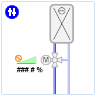

Library Browser - Graphics Editor
The Graphics Library Browser allows you toggle between a view that displays all the available symbols and graphic template objects in your project libraries.
Additionally, the Graphics Library Browser supports the following actions:
- Select from a thumbnail view or list view of all available symbols or graphic templates.
- Move the pointer over the graphic object to view its associated library name, where it is stored, the graphic object’s name, and its dimensions.
- Filter through project the graphic object by name. As text is entered into the filter field, the relevant symbols or graphic templates display in the view’s preview pane.
- Sort available symbols or graphic templates by library from a filter drop-down menu.
- Drag-and-drop or single-click a symbol or graphic template to add it to the active canvas. This creates an instance of the symbol and template.
- Double-click a symbol to add it to the active graphic
- Select a graphic object to open, edit, or copy the references onto the clipboard.
- Select multiple graphic objects to drag-and-drop onto a graphic or to open on in the work area.
- Replace or delete a symbol or graphic template from the Graphics Library Browser.
- Copy the symbol or graphic template reference information and paste the information onto a Property or Expression field.

NOTE:
Deleting the symbol or graphic template from the Graphics Library Browser only deletes it from the Library Browser in the Graphics Editor and does not delete or remove it from the Library Browser in System Browser.
Localizing Symbols and Graphic Templates
Each L1-Headquarter level library contains Library Object folders with pre-existing symbols and graphics that are used for creating graphics and floor plans, etc. It is highly recommended that these original files are not modified. However, if you need a customized version of an existing L1-Headquarter library object, you can customize the original library object and save the customized version to another library level. When a L1-Headquarter symbol is used in a graphic, if a customized symbol exists, then the customized symbol displays and is used in the graphic.
Original Library Object: Symbol or Graphic Template
The original library object remains unchanged in the L1-Headquarter library. All L1-Headquarter libraries that have a customized version in another library level, display Localized  in the upper left-hand corner of the symbol or graphic template, and, when you hover over the library object in the Graphics Editor or System Manager Library Browser a tooltip displays a list of the customized object and the library level they are stored in.
in the upper left-hand corner of the symbol or graphic template, and, when you hover over the library object in the Graphics Editor or System Manager Library Browser a tooltip displays a list of the customized object and the library level they are stored in.
Below is an example of a Headquarter Symbol that has a customized version.

Customized Library and Library Object
The new customized library object is stored in a clone-directory--in the library level depending on your customization level-- with the original library name and the original file name.
You must have the appropriate user-rights to customize an original file. Access rights also do not apply to the library levels above your access rights, only below. Depending on user-rights, an authorized librarian or project engineer can manage discipline specific system libraries.
Prior to Customizing a Library Object: Setting the Customization Level
Prior to customizing a library object, you must set the customization level in the Extended Operation tab to the appropriate library. Once you have applied the customization level, you can then navigate to the appropriate Headquarter library and customize the library object.
Library Levels
The management station provides a system Headquarter library that consists of a collection of sub-libraries, such as Base, BA, or Global, etc. that contain data related to system objects. In addition to the Headquarter level libraries, there are three other library levels: Region, Country, and Project. All library levels, except for Project, require a specific license. Otherwise, each library level represents the following:
- L1-Headquarter - Supports core set of data. Includes sub-libraries such as BA, Base, Global, etc. The highest priority in the hierarchy of library folders
- L2-Region - Generally used to support international customizations
- L3-Country - Generally used to support regional customizations
- L4-Project - Used for customer-specific or project solutions. Lowest priority in hierarchy of library folders
For a more in-depth understanding of libraries, please refer to the Library Reference topic.
Related Topics
For workspace overview, see Graphics Editor Library Browser.
For related procedures, see Working with the Graphics Editor Library Browser.